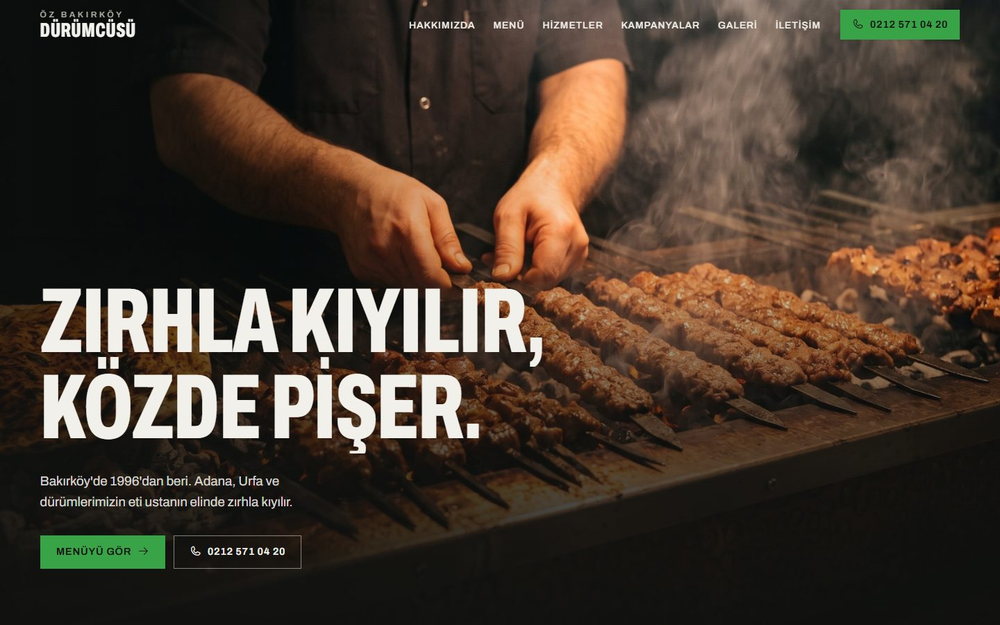
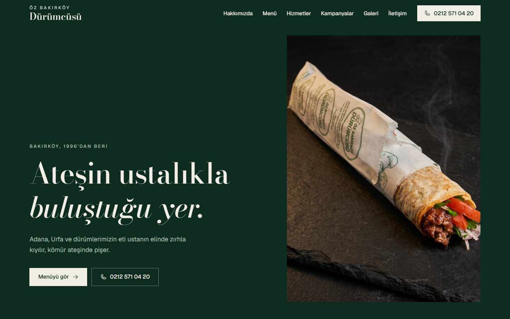

Öz Bakırköy Dürümcüsü
Yeni web sitesi için iki tasarım yönü. İkisi de eski sitenin sayfa yapısıyla hazır: ana sayfa, hakkımızda, menü, kategoriler, her yemeğe ayrı sayfa, hizmetler, kampanyalar, galeri ve iletişim.

Yeni web sitesi için iki tasarım yönü. İkisi de eski sitenin sayfa yapısıyla hazır: ana sayfa, hakkımızda, menü, kategoriler, her yemeğe ayrı sayfa, hizmetler, kampanyalar, galeri ve iletişim.

